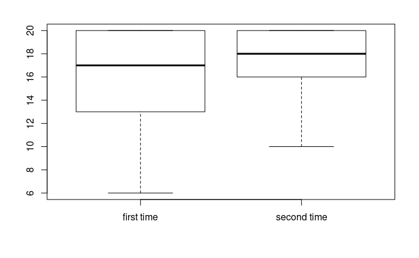

Statistics portfolio
Analyzing score data set of a color game
Background
Playing video games was one of the hobbies I grew up doing and loving. Playing video games can give you some enjoyment while challenging your skills. In this analysis I try to answer some questions that might show some behavior difference between gamers and non-gamers
pValue = t.test(observed_first_score,observed_second_score, alternative = "less")$p.value;
cat("p-value = ",pValue)
Introduction
Color game is a game where you have to pick the right color within the time limit. There are two modes of the game.
Normal mode
The game will ask you to choose a color from 4 options within 3 seconds. The default number of questions is 20. It can be changed but in this case we stuck to 20 question per person
Shuffled colors mode
The game will ask you to choose a word from 4 options where colors and words are shuffled.
The default number of questions is 20. It can be changed but in this case we stuck to 20 question per person.
You can play the game on this link
Dataset
The data set collected shows the scores of the games played twice in both modes. It also show you the age, gender, and if the person is a gamer (plays video-games casually) The dataset is assigned IDs to keep the names anonymous.
Reading dataset
library(knitr)
game_data = read.csv('data.csv');
kable(head(game_data));
| id | first time | second time | first time.with.shuffle | second time with shuffle | Gamer | Age | gender |
|---|---|---|---|---|---|---|---|
| 1 | 17 | 14 | 13 | 19 | TRUE | 25 | m |
| 2 | 19 | 20 | 19 | 19 | TRUE | 23 | f |
| 3 | 17 | 19 | 18 | 20 | FALSE | 19 | f |
| 4 | 13 | 16 | 9 | 10 | FALSE | 19 | f |
| 5 | 12 | 16 | 10 | 12 | FALSE | 21 | f |
| 6 | 20 | 20 | 20 | 20 | FALSE | 27 | f |
Attributes
- ID a sudo id for the users to keep them anonymous.
- First time : How much the player scored in the first try (normal mode).
- First time : How much the player scored in the first try (normal mode).
- Second time : How much the player scored in the second try (normal mode).
- First time with shuffle : How much the player scored in the first try (shuffled mode).
- Second time with shuffle : How much the player scored in the second try (shuffled mode).
- Gamer : : plays video games casually.
- Age: player's age.
- Gender: player's gender (m for male, f for female).
Data summary
kable(summary(game_data));
| id | first time | second time | first time with shuffle | second time with shuffle | Gamer | Age | gender |
|---|---|---|---|---|---|---|---|
| Min. : 1 | Min. : 6.00 | Min. :10.00 | Min. : 7.00 | Min. : 8.00 | Mode :logical | Min. :19.00 | f:8 |
| 1st Qu.: 5 | 1st Qu.:13.00 | 1st Qu.:16.00 | 1st Qu.:13.00 | 1st Qu.:16.00 | FALSE:10 | 1st Qu.:21.00 | m:9 |
| Median : 9 | Median :17.00 | Median :18.00 | Median :17.00 | Median :18.00 | TRUE :7 | Median :23.00 | NA |
| Mean : 9 | Mean :16.35 | Mean :17.18 | Mean :15.47 | Mean :16.71 | NA | Mean :31.35 | NA |
| 3rd Qu.:13 | 3rd Qu.:20.00 | 3rd Qu.:20.00 | 3rd Qu.:18.00 | 3rd Qu.:19.00 | NA | 3rd Qu.:40.00 | NA |
| Max. :17 | Max. :20.00 | Max. :20.00 | Max. :20.00 | Max. :20.00 | NA | Max. :81.00 | NA |
The observations are as follows:
There are 17 observations. 9 males 8 females and 9 gamers (people who casually play games) and 8 people who don’t play games.
First and second score (normal mode)
In the data set we have many people who scored high scores from the start such as 20 and 19. Given it is their first time playing the game Which made me question weather all players are going to score the more in the second try than the first try
My null hypothises is that the number of scores in the second try is less than the first try
observed_first_score <-game_data$first.time;
observed_second_score <-game_data$second.time;
boxplot(observed_first_score,observed_second_score, names = c('first time','second time'));

pValue = t.test(observed_first_score,observed_second_score, alternative = "less")$p.value;
cat("p-value = ",pValue)
Output
## p-value = 0.2652658
We fail to reject the null hypothises because the p-value is more than 0.05
Casual gamers and gender
One of the questions I asked people before starting the game is weather they usually play video games as a hobby. Video games being one of the hobbies that I enjoy I always hear that there are more male players than female players. Which I wanted to see weather this is a true statement or just a false stereotype. My null hypothises is that there being a casual gamer is dependant from the gender variable.
contingencyTable = table(game_data$gender,game_data$Gamer);
kable(contingencyTable);
fisher.test(contingencyTable)
Output
##
## Fisher's Exact Test for Count Data
##
## data: contingencyTable
## p-value = 0.04977
## alternative hypothesis: true odds ratio is not equal to 1
## 95 percent confidence interval:
## 0.8564753 728.9937469
## sample estimates:
## odds ratio
## 11.63911